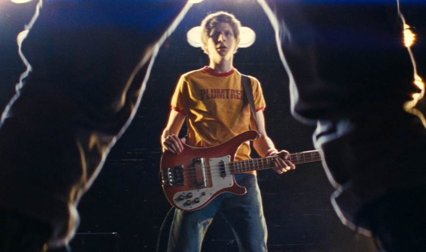

绝对定位的居中很麻烦，如果用负边距来写， 窗口尺寸小于min-width时候达不到要求，会有溢出。把渐变这块改成relative定位可以用margin auto来居中， 但是背景图就要改成absolute定位，不用js的话渐变窗口又吃不到父元素的自适应高度，最后还是用绝对定位在这个渐变单元快上， 使用@media改了当窗口小于min-width时候可以固定在右端，超过时候可以保持980px宽度自适应居中，以此达到要求中的， 当窗口小于980px时固定页面，允许滚动条。虽然是刚接触前段技术，但总觉得有更灵巧的方法来解决这个，可能最初的结构就定的不好，没了。
不用js的话渐变窗口又吃不到父元素的自适应高度，最后还是用绝对定位在这个渐变单元快上， 使用@media改了当窗口小于min-width时候可以固定在右端，超过时候可以保持980px宽度自适应居中，以此达到要求中的， 当窗口小于980px时固定页面，允许滚动条。虽
小于980px时固定页面，允许滚动条。虽
话渐变窗口又吃不到父元素的自适应高度，最后还是用绝对定位在这个渐变单元快上， 使用@media改了当窗口小于min-w滚动条。虽